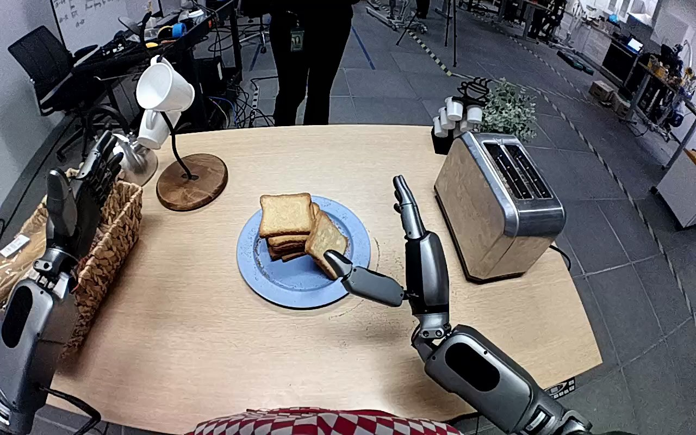

NVIDIA GR1 · 27
Video 27

Visual review action_review.json
{
"prompt_protocol": "humanoid_action_v1",
"prompt_provenance": "visually_authored_from_video_and_initial_frame",
"reviewed_contact_sheets": [
"sheet_001.jpg"
],
"inspected_frame_stride": 2,
"inspected_sampled_frame_count": 60,
"observed_sequence": [
{
"source_frame_interval": [
0,
46
],
"action": "The open right hand moves toward the separate bread slice leaning against the stack on the blue plate. The left hand remains open beside the basket, away from the bread.",
"confidence": "high"
},
{
"source_frame_interval": [
47,
62
],
"action": "Right fingers close around the separate slice; the hand tilts it away from the stack and begins lifting it off the plate.",
"confidence": "high"
},
{
"source_frame_interval": [
63,
82
],
"action": "Right hand lifts the bread clear and carries it toward the toaster with the slice held upright. Left hand shifts slightly inward but does not contact the bread or toaster.",
"confidence": "high"
},
{
"source_frame_interval": [
83,
105
],
"action": "Right hand positions the upright bread over a toaster slot and lowers its bottom edge toward the opening while maintaining its grasp.",
"confidence": "high"
},
{
"source_frame_interval": [
106,
117
],
"action": "The bread is held partly in the toaster slot; the right fingers continue supporting it near the rim.",
"confidence": "high"
},
{
"source_frame_interval": [
118,
119
],
"action": "Right fingers open and the bread drops farther into the slot, leaving only a small edge visible inside the opening. The hand remains next to the slot.",
"confidence": "high"
}
],
"arm_hand_roles": {
"right": "Sole manipulating hand: grasps the separate slice, lifts and transports it upright, lowers it into the toaster slot, then opens to release it.",
"left": "Open nonparticipating hand beside the basket; slight repositioning during transport without contact or support.",
"coordination": "Single-hand manipulation; no hand-to-hand transfer or two-hand stabilization."
},
"anatomical_side_evidence": {
"evidence": "The camera looks forward from above the robot body/apron at the bottom center. The manipulating forearm connects toward the lower-right side of that body, while the other forearm enters from the lower-left side; the palms and inward-facing thumbs are consistent with this robot-relative right/left assignment. This is a forward robot viewpoint, not a facing-camera mirror convention.",
"confidence": "high",
"uncertainty": null
},
"terminal_state": "The right hand is open immediately beside the toaster opening after releasing the bread; the slice has descended into the slot and a small edge remains visible within it. Remaining slices stay on the blue plate. No hand withdrawal, toaster lever press, or toasting is shown.",
"uncertainties": [
"The toaster rim and hand obscure the bread below the opening, so the exact depth and seating inside the toaster are not visible."
],
"annotation_discrepancies": [],
"initial_scene": "Forward robot view with both forearms flanking its apron/body; a blue plate holds a bread stack and one separate slice leaning against it, with a two-slot toaster to robot-right. The right hand is open beside the separate slice and the left hand is open near the basket.",
"evidence_frame_indices": [
0,
26,
54,
64,
78,
94,
108,
112,
114,
116,
117,
118,
119
],
"selected_execution_status": "success",
"execution_status_basis": "The separate slice is lifted from the plate, transported to the toaster and visibly released into the slot by the final frame; this success refers only to bread insertion, not toaster activation.",
"inspection_coverage": {
"full_source_frame_interval": [
0,
119
],
"sampled_source_frame_interval": [
0,
118
],
"sample_count": 60,
"stride": 2,
"native_initial_png_viewed": true,
"native_transition_and_terminal_frames_viewed": [
26,
54,
64,
78,
94,
108,
112,
114,
116,
117,
118,
119
]
},
"video_id": "27",
"dataset": "NVIDIA_GR1_100",
"dedicated_review_agent": "review_gr1_27",
"review_source_video": "NVIDIA_GR1_100/27/original/original.mp4",
"source_frame_count": 120,
"source_fps": 20.0,
"native_detail_frames": [
26,
54,
64,
78,
94,
108,
112,
114,
116,
117,
118,
119
],
"world_model_prompt": "The robot uses its right hand to grasp the separate bread slice leaning against the stack on the blue plate and lift it clear. It carries the slice upright to the toaster, lowers it into a slot, and opens its fingers to release it, leaving the bread inside the toaster and the right hand beside the opening. Keep the camera fixed; preserve robot geometry, physically valid joint motion, and normal gripper opening and closing.",
"original_task_instruction": "Use the right hand to pick up bread slice from blue plate to toaster.",
"selected_segment": {
"start_frame": 0,
"end_frame_exclusive": 120,
"reason": "Complete original single-task reference; no cropping or trimming requested."
},
"source_video_sha256": "f8167d4555df46242449687246e6a4755d5e81d785bd10f8326c73ccee4cd584",
"review_completed_at": "2026-10-13T17:52:21.472958+00:00"
}